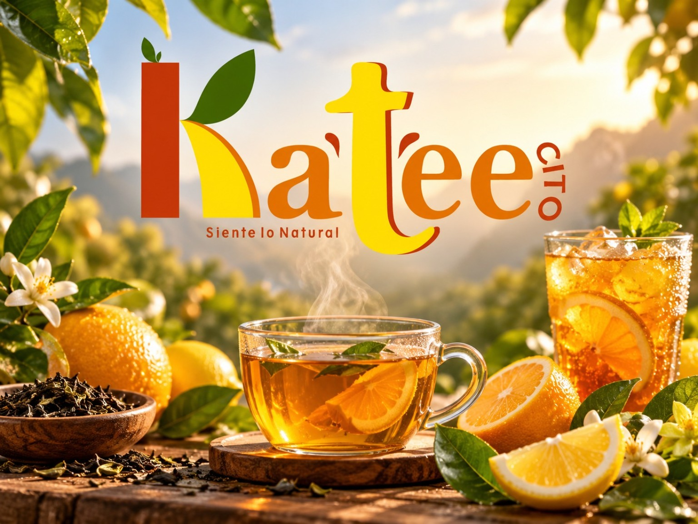
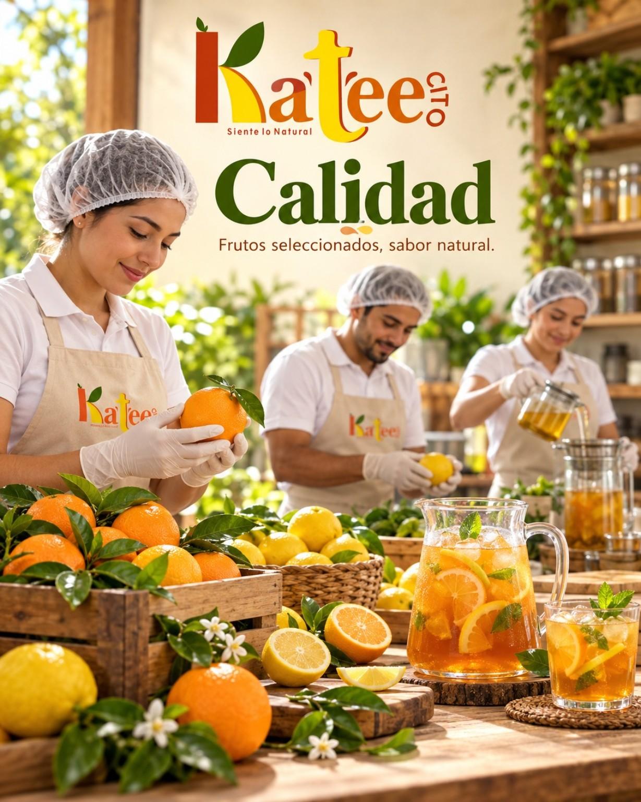
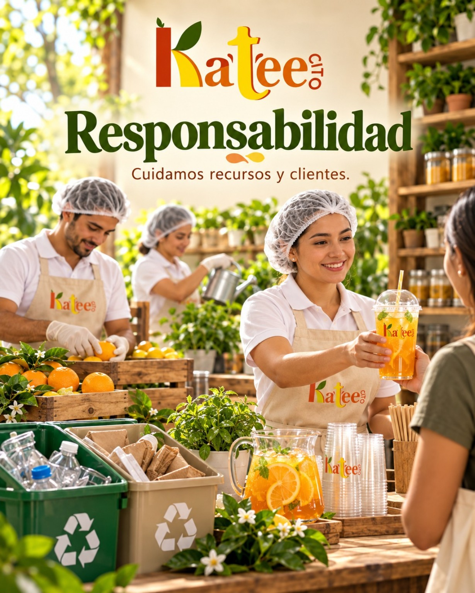
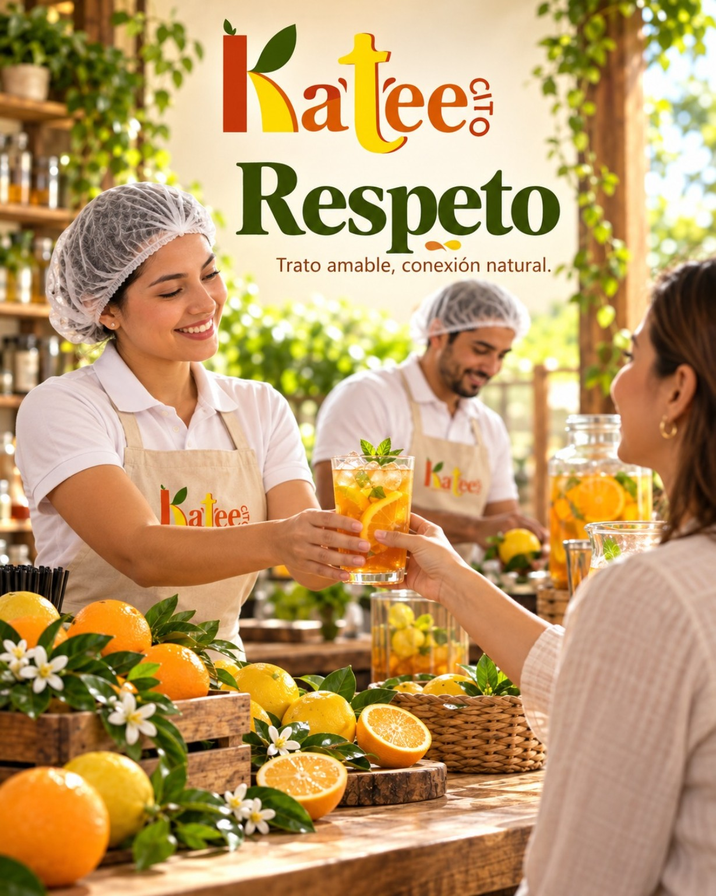

Descripción de la empresa
Ka´tée cito es una empresa dedicada a la preparación y venta de té en polvo, a base de frutos cítricos que abundan en la selva.
Información organizada de empresa.
Ka´tée cito S.A.C
Ka´tée cito
Disfruta el sabor natural de los cítricos en cada taza.
Venta de té a base de frutos cítricos.
té e infusiones.
Pichanaki, Chanchamayo, Junín.
Consumidores interesados en bebidas naturales a base de frutos cítricos.
Ka´tée cito es una empresa dedicada a la preparación y venta de té en polvo, a base de frutos cítricos que abundan en la selva.

Ofrecer a nuestros consumidores té de la mejor calidad con los sabores cítricos que abunda en toda nuestra Selva Central, brindando bebidas deliciosas y naturales propias de nuestra región.
Ser para el año 2030 una marca reconocida y valorada no solo por la calidad de nuestro té, sino también por brindar una experiencia única a través del sabor auténtico y delicioso de los frutos de nuestra región. Buscamos llevar la riqueza de nuestros productos a un mayor número de consumidores, destacándonos por la calidad, frescura y sabor presentes en cada sorbo.
Ofrecer productos naturales elaborados a base de frutos cítricos.
Cumplir con nuestros clientes y cuidar los recursos naturales.
Tratar cordialmente a clientes, trabajadores y a la naturaleza.
Mejorar continuamente el servicio a nuestros consumidores.


